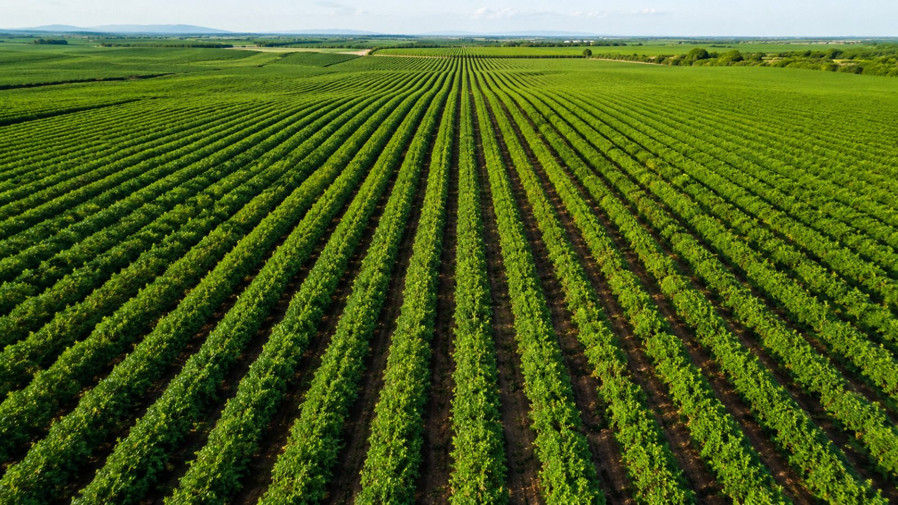
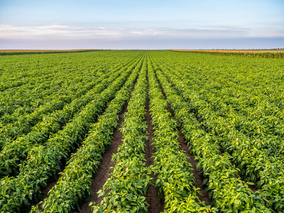

Exotic Vegetables
Broccoli, celery, coloured bell peppers, baby corn, cherry tomatoes, napa cabbage, leeks, lettuce varieties, pepper varieties, pok choy, red cabbage, zucchini and more.

Walson NutriFoods · Farming & Distribution
We embrace sustainable farming practices that preserve natural resources, enhance soil health, and promote long-term agricultural resilience. Complemented by an efficient and integrated distribution network, we ensure that every product reaches our customers with uncompromised freshness, consistent quality, and complete reliability. Our commitment extends beyond cultivation — we deliver trust, excellence, and value across every stage of the supply chain.
Our Range
A wide, internationally-benchmarked selection grown across owned farms and a trusted farmer network.
Broccoli, celery, coloured bell peppers, baby corn, cherry tomatoes, napa cabbage, leeks, lettuce varieties, pepper varieties, pok choy, red cabbage, zucchini and more.
Basil, bird's eye / Thai chilli, chives, galangal, jalapeño, lemon grass, oregano, parsley, rosemary, sage, thyme and many more.
Wide range of lettuces, vine crops, pepper varieties, herbs and nutra-crops, certified to international standards.
Button mushrooms, oyster mushrooms, king oyster mushrooms and shiitake mushrooms.
For food processing companies, export houses and collection centres.
Karnataka · Maharashtra · Andhra Pradesh & Telangana
The Walson Advantage
Backed by a trusted network of skilled and progressive farmers spread across three states in India.
State-of-the-art cold storage units ensure farm-fresh quality, longer shelf life and minimal post-harvest losses.
Integrated supply chain ensures timely harvesting, careful handling and on-time delivery across India and global markets.
Stringent quality control, traceability and certifications deliver safe, nutritious and consistently superior produce.
Hygienic packing and flexible solutions tailored to diverse customer and market requirements.
A dedicated support team focused on long-term relationships built on reliability, transparency and trust.

Sourcing partner you can rely on
Looking for consistent, certified fresh produce for retail, food processing or export? Let's talk supply.
Talk to us